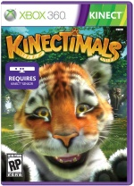

A wide-eyed Bengal tiger cub cocks its head to the side and playfully peers at you. Memories of your first trip to the zoo come rushing back. "Kinectimals" invites children, their parents and animal lovers of all ages to build lasting friendships with some of the world's most exotic creatures. Just like real pets, your "Kinectimals" will come running when they hear your voice, respond to commands like "jump," "roll over" and "play dead," and purr with joy when you scratch them behind the ears.
- Details
-

Kinectimals
PUBLISHER: Microsoft Game Studios
DEVELOPER: Frontier Developments Ltd.
RELEASED: November 2010
PRICE: £44.99
PURCHASE: Amazon.co.uk
WEBSITE: Xbox.com
- Images
- Screens


- Features
-
Get in touch with your wild side Your journey begins when you adopt and name one of 20 playful friends, including a lion, cheetah and Bengal tiger. From the first time she recognises her name to when she learns to fetch, your cub will grow up as your sidekick, eager to discover the island around you. She will always be ready for a scratch and a belly rub with smiles and purrs.
The fun never ends There are new ways to train tricks such as fetch, play activities such as jump rope, and even master agility courses with hops, stops and balancing acts. Invite a friend with his or her pet for some fun contests.
Discover, collect and customise kinectimalsùrewards those who are curious about the island they live on. Travel far and wide to discover treasures and toys, and find and unlock new environments. You can customise your pet and decorate your home, plus use the in-game store to shop for items to nurture and care for your new best friend.
Grow your kinectimals family Collectible, limited-edition plush toys will be available online and at popular retail stores. Choose your new friend, scan the code with the kinect sensor, then watch it come to life on the screen right before your eyes. With your very own plush pal you can keep your new friend with you even when you're away from your Xbox 360.

{kind=link}
{kind=link}
{kind=link}
{kind=link}
{kind=link}
{kind=link}